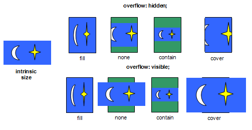

CSS Paged Media Module Level 3
Editor's Draft 25 April 2009
- This version:
- http://dev.w3.org/csswg/css3-page/
- Latest version:
- http://www.w3.org/TR/css3-page
- Previous version:
- http://www.w3.org/TR/2004/CR-css3-page-20040225/
- Editors:
- Melinda Grant, Hewlett-Packard
- Håkon Wium Lie, Opera Software
- Elika J. Etemad, Hewlett-Packard
- Håkon Wium Lie, Opera Software
Copyright © 2009 W3C® (MIT, ERCIM, Keio), All Rights Reserved. W3C liability, trademark and document use rules apply.
Abstract
This module describes the page model that partitions a flow into pages. It builds on the Box model module and introduces and defines the page model and paged media. It adds functionality for pagination, page margins, page size and orientation, headers and footers, widows and orphans, and image orientation. Finally it extends generated content to enable page numbering and running headers / footers.
Status of this Document
This is a public copy of the editors' draft. It is provided for discussion only and may change at any moment. Its publication here does not imply endorsement of its contents by W3C. Don't cite this document other than as work in progress.
The (archived) public mailing list www-style@w3.org (see instructions) is preferred for discussion of this specification. When sending e-mail, please put the text “css3-page” in the subject, preferably like this: “[css3-page] …summary of comment…”
This document was produced by the CSS Working Group (part of the Style Activity).
This document was produced by a group operating under the 5 February 2004 W3C Patent Policy. W3C maintains a public list of any patent disclosures made in connection with the deliverables of the group; that page also includes instructions for disclosing a patent. An individual who has actual knowledge of a patent which the individual believes contains Essential Claim(s) must disclose the information in accordance with section 6 of the W3C Patent Policy.
This document contains the CSS3 Paged Media Module W3C Last Call Working Draft of 25 April 2009. The Last Call period ends on TBD.
Relative to the previous Last Call Working Draft, this version
incorporates changes to the formerly named ‘fit’ and ‘fit-position’ properties; they are renamed to
‘image-fit’ and ‘image-position’ and redefined
to enable additional use cases. The margin-box sizing algorithm has been
reworded to be a bit simpler, and many miscellaneous clarifications and
editorial improvements have been incorporated.
Features at-risk (may be removed if they lack implementor interest):
- image-fit
- image-position
- comma-separated page selectors
Expected next revision to this document is another LCWD, driven by the
change in definition of ‘image-fit’ and ‘image-position’.
The Disposition of Comments document contains the current issues list and responses to input received during this Last Call period.
Table of Contents
- 1 Introduction
- 2 Conformance
- 3 Page Terminology
- 4 The Page Model
- 5 Page Selectors and the Page Context
- 6 Margin Boxes
- 7 Page Properties
- 8 Page size
- 9 Page Breaks
- 10 Image Properties
- Appendix A: Applicable CSS2.1 Properties
- Appendix B: Transfer Possibilities
- References
1 Introduction
Paged media (e.g., paper, transparencies, photo album pages, pages displayed on computer screens as printed output simulations) differ from continuous media in that the content of the document is split into one or more discrete static display surfaces. To handle pages, CSS3 Paged Media describes how:
- page breaks are created and avoided;
- the page properties such as size, orientation, margins, border, and padding are specified;
- headers and footers are established within the page margins;
- content such as page counters are placed in the headers and footers; and
- orphans and widows can be controlled.
This module defines a page model that specifies how a document is formatted within a rectangular area, called the page box, that has finite width and height.
Although CSS3 does not specify how user agents transfer page boxes to sheets, it does include certain mechanisms for telling user agents about the intended page sheet size and orientation. In the general case, CSS3 assumes that one page box will be transferred to one surface of similar size.
All properties defined in this specification also accept the inherit keyword as their value, but for readability it has not been listed explicitly.
2 Conformance
All of the text in this specification is normative except sections explicitly marked as non-normative, examples, and notes. The keywords "MUST", "SHALL", "MUST NOT", "SHALL NOT", "REQUIRED", "SHOULD", "SHOULD NOT", "RECOMMENDED", "MAY", and "OPTIONAL" when used in this document are to be interpreted as described in RFC 2119 [RFC2119]. However, for readability, these words do not appear in all uppercase letters in this specification.
Examples in this specification are introduced with the words "for
example" or are set apart from the normative text with
class="example", like this:
This is an example of an informative example.
Informative notes begin with the word "Note" and are set apart from the
normative text with class="note", like this:
Note, this is an informative note.
3 Page Terminology
The following terminology and accompanying diagrams help to describe the page model:
- Page sheet
 The page sheet is one surface of the
physical medium. The illustration to the right shows a representation of
the upper-left corner of a page sheet.
The page sheet is one surface of the
physical medium. The illustration to the right shows a representation of
the upper-left corner of a page sheet.
- Printable and non-printable areas
- The non-printable area is the area of a page sheet that a physical device such as a printer is not capable of marking reliably, usually due to the printer's paper handling mechanism. This value is printer dependent and is usually a small region along each edge of the page sheet. The printable area is the area of page sheet that a printer is capable of marking reliably. The size of the printable area is the size of the page sheet reduced by the size of the non-printable area. A user agent may not know the dimensions of this area for a particular printing device; but when its dimensions are known, user agents MAY adjust the formatting of the document so that content falls within the printable area. How this adjustment is accomplished is device dependent within the constraints expressed in the sections Rendering page boxes that do not fit a page sheet and Content outside the page box.
- Page Orientation
- The page orientation is defined by comparing the length of the edges
of a page box. The page box is a rectangle with
two perpendicular edges called the long edge and the short edge. The
length of the long edge is always greater than or equal to the length of
the short edge. When the page box is square, the two edges are of the
same length and either can be used as the long edge with the other being
the short edge. This specification defines page orientations of
‘
portrait’ and ‘landscape’. - Portrait Orientation
- A portrait page's height is greater than or equal to its width. Horizontal elements are parallel to the short edge and vertical elements to the long edge.
- Landscape Orientation
- A landscape page's width is greater than or equal to its height. Horizontal elements are parallel to the long edge and vertical elements to the short edge.
- Duplex Printing
- Duplex printing prints one page box per side of a page sheet and uses both sides of the page sheet. This module provides no ability to specify whether a document is duplex printed, but the concept of left and right pages is based on the assumption that the document is duplex printed, regardless of whether or not it actually is.
- Binding Edge
- The binding edge is the edge of the page box that is toward the binding if the material is bound. The binding edge often has a larger margin than the opposite edge to provide for the space used by the binding. The binding edge can be any of the four edges. However, page sheets are customarily bound so that the binding edge of page boxes with portrait orientation is vertical. This module provides no method to specify the binding edge. In duplex printing, the binding edge is on opposite sides of the page box for the left and right pages.
- Facing Pages
- Facing pages are two sequential pages such that when the document is duplex printed they are on separate sheets of paper. Typically, the earlier page will be the back side of one sheet and the later page will be the front side of another. They are usually laid out so that the binding edges of facing pages are vertical and adjacent when the pages are placed in their normal reading orientation.
- Left Page
- A page that would be on the left if it is part of a pair of facing
pages as typically laid out. Page layouts for documents using a
left-to-right page progression have the earlier of the facing pages on
the left. Rules specific to the left page can be specified using the
‘
:left’ page selector. - Right Page
- A page that would be on the right if it is part of a pair of facing
pages as typically laid out. Page layouts for documents using a
right-to-left page progression have the earlier of the facing pages on
the right. Rules specific to the right page can be specified using the
‘
:right’ page selector.
4 The Page Model
In the paged media formatting model, the document is transferred into
one or more page boxes. The page box is a
specialized CSS box that maps to a rectangular print media surface, such
as a page of paper. It is roughly analogous to the viewport.  As with other
CSS boxes, a page box consists of
margin, border, padding, and content areas. The containing block of the
page box is the rectangle that coincides with its margin edges.
As with other
CSS boxes, a page box consists of
margin, border, padding, and content areas. The containing block of the
page box is the rectangle that coincides with its margin edges.
The content and margin areas of a page box have special functions:
- The content area of a page box is called the page area. The content of the document is flowed into one or more page boxes. The page area acts as a container for all the boxes generated by the root element and its descendants that are laid out within a given page box. The edges of the page area on the first page establish the rectangle that is the initial containing block of the document.
- The margin area of a page box is divided into 16 margin boxes. Each margin box has its own margin, border, padding and content areas. Margin boxes are typically used to display running headers and footers.
The properties of a page box are determined by
properties declared
within the page
context, which is the declaration block of the @page rule. Page boxes differ from other boxes in
that the ‘width’ and ‘height’
properties do not apply to a page box. The size of the page box is
specified using the ‘size’ property in the page context.
Declarations in the page context affect the page box and/or can inherit to the margin boxes, but they do not apply to or inherit into the document's root element or other content.
4.1 Content outside the page box
When formatting content in the page model, some content may end up
outside the page box. For example, an element whose ‘white-space’ property has the value
‘pre’ can generate a box that is
wider than the page box. As another example, when boxes are positioned
absolutely or relatively, they may end up in "inconvenient" locations.
For example, images may be placed on the edge of the page box or 100,000
meters below the page box.
A specification for the exact formatting of such elements lies outside the scope of this document. However, it is recommended that authors and user agents observe the following general principles concerning content outside the page box:
-
Content should be allowed slightly beyond the page box to allow pages to "bleed".
-
User agents SHOULD avoid generating a large number of content-empty pages to honor the positioning of elements (e.g., printing 100 blank pages is probably neither the author's nor the user's intent). A Content-empty page is a page box whose page area contains no printable content other than backgrounds and/or borders. A page box whose page area contains generated content, or content whose visibility is ‘
hidden’, or invisible content such as a zero-width space is not a content-empty page. On the other hand, a page containing only a background and/or borders and/or margin-box content is a content-empty page.Note, however, that generating a small number of empty page boxes is sometimes necessary to honor the ‘
left’ and ‘right’ values for ‘page-break-before’ and ‘page-break-after’. -
Authors SHOULD NOT position elements in inconvenient locations just to avoid rendering them. Instead:
- To suppress box generation entirely, set the ‘
display’ property to ‘none’. - To make a box invisible, set the ‘
visibility’ property.
- To suppress box generation entirely, set the ‘
-
This specification does not define how boxes positioned outside the page box are handled. Possibilities include discarding them or creating page boxes for them at the end of the document.
4.2 Page Backgrounds and Painting Order
When drawing a page of content, the page background and borders are painted first (underneath). Margin-boxes are painted over (on top of) the page box. The root element then paints the canvas and the document contents within the page padding box.
The exact painting order of margin boxes is not specified, however it is recommended that when margin boxes overlap, paint order should place center/middle margin boxes on top of corner margin boxes, which are in turn painted on top of other boxes. More precisely, in terms of the algorithm in CSS2.1 Appendix E the exact "tree order" of margin boxes is not defined, but it is recommended that center/middle boxes be after corner boxes, which should themselves be after other boxes.
The UA may support the z-index property for margin boxes.
In this case the root element, together with the canvas background and
all of the document contents, are treated as a single element with a
z-index value of ‘0’: the
margin boxes never interleave with parts of the document content, they
may only paint in front of or behind the document content and its canvas.
The page box itself generates a new stacking context and is treated as
the parent of all the margin boxes as well as the document content. In
other words, nothing ever paints behind the page box backgrounds or
borders. Since the position property does not apply to
margin boxes, z-index always affects margin boxes as if they
were positioned elements regardless of the position
property's value. Mark this at-risk.
4.3 Page Progression
CSS distinguishes between left pages and right pages on all documents,
whether they are printed duplex or not. Each left page is followed by a
right page and vice versa. Left and right pages can be styled differently
with the :left and
:right pseudo-classes.
Whether the first page of a document is a left page or a right page depends on the page progression of the document. The page progression is the direction in which the printed pages of a document would be sequenced when laid out side-to-side. For example, English and horizontally-set Japanese typically progress from left to right, whereas Arabic and vertically-set Japanese pages typically progress from right to left. In documents with with a left-to-right page progression the first page of the document is a right page, and vice versa.
The page progression direction is determined as follows:
- If text is laid out in horizontal lines, the page progression is the same as the inline progression.
- If text is laid out in vertical lines, the page progression is the same as the block progression.
If the UA supports the ‘direction’ and ‘block-progression’ properties from the CSS 3
Text Layout Module [CSS3TEXTLAYOUT], it must
determine whether the first page is a left or right page from the values
of those properties on the root element.
To explicitly force a document to begin printing on a left or right
page, authors can insert a page break
before the first generated box. The UA must suppress the first
(empty) page(s) in this case (and the :first selector
applies to the first printed page).
5 Page Selectors and the Page Context
5.1 The @page Rule
Authors can specify various aspects of a page box, such as its
dimensions, orientation, and margins, within an @page rule. An @page rule
consists of the keyword ‘@page’, an OPTIONAL page name followed with no intervening space
by an OPTIONAL page pseudo-class, and a block of
declarations (said to be in the page context).
Margin at-rules may be interleaved with
the declarations in the page context.
The OPTIONAL page name and OPTIONAL page pseudo-class constitute the page selector. The page selector specifies for
which pages the declarations apply. In CSS3, page selectors can designate
the first page of a document, all left pages, all right pages, or pages with specific names. Multiple
selectors may be combined with a comma (which may be preceded and/or
followed by white space); in this case the ‘@page’ rule applies to pages that match any
of the page selectors. (Note: this feature is at-risk.) If no page
selector is given, then the ‘@page’ rule applies to all pages.
Properties declared within the page context apply to the page box.
If an error is encountered during the processing of a declaration block within a page or a margin context, the Rules for handling parsing errors apply; that is, valid declarations within the block are applied.
5.2 Page pseudo-classes: :left, :right, and :first
When printing double-sided documents, left and right pages are often formatted differently. This can be expressed through CSS pseudo-classes defined in the page context.
All pages are automatically classified by user agents as either left
pages or right pages. The ‘:left’ and ‘:right’ page pseudo-classes can be used to
selectively apply rules to only the left or right pages, respectively.
@page :left {
margin-left: 3cm;
margin-right: 4cm;
}
@page :right {
margin-left: 4cm;
margin-right: 3cm;
}
If different declarations have been given for left and right pages, the user agent MUST honor these declarations even if the user agent does not transfer the page boxes to left and right sheets (i.e., a printer that only prints on one side of the medium must nevertheless produce correctly formatted output).
Authors can also specify style for the first page of a document with
the ‘:first’
pseudo-class. Such style rules are applied only to the first printed page
of a document.
@page { margin: 2cm } /* All margins set to 2cm */
@page :first {
margin-top: 10cm /* Top margin on first page 10cm */
}
html {page-break-before: always;}
For an XHTML document with a left-to-right page progression, the above
style rule will cause the first page of the document to print on a
‘:right’ page
Note. Adding declarations to the ‘:left’ or ‘:right’
pseudo-class does not necessarily influence whether the document comes
out of the printer double- or single-sided (which is outside the scope
of this specification).
Note. Future versions of CSS may include other page pseudo-classes.
5.3 @page rule grammar
The syntax for the @page rule is a specialization of the generic at-rule defined by CSS 2.1. This grammar extends the at-rule syntax to allow @page rules nested inside @media rules. User agents MUST adhere to the following grammar:
See [CSS21], Section 4.1.1 and Appendix G for the expansion of missing productions:
All new lexical tokens are specializations of the ATKEYWORD lexical token:
PAGE_SYM ::= "@page" TOPLEFTCORNER_SYM ::= "@top-left-corner" TOPLEFT_SYM ::= "@top-left" TOPCENTER_SYM ::= "@top-center" TOPRIGHT_SYM ::= "@top-right" TOPRIGHTCORNER_SYM ::= "@top-right-corner" BOTTOMLEFTCORNER_SYM ::= "@bottom-left-corner" BOTTOMLEFT_SYM ::= "@bottom-left" BOTTOMCENTER_SYM ::= "@bottom-center" BOTTOMRIGHT_SYM ::= "@bottom-right" BOTTOMRIGHTCORNER_SYM ::= "@bottom-right-corner" LEFTTOP_SYM ::= "@left-top" LEFTMIDDLE_SYM ::= "@left-middle" LEFTBOTTOM_SYM ::= "@left-bottom" RIGHTTOP_SYM ::= "@right-top" RIGHTMIDDLE_SYM ::= "@right-middle" RIGHTBOTTOM_SYM ::= "@right-bottom" media : MEDIA_SYM S* medium [ COMMA S* medium ]* LBRACE S* [ page | ruleset ]* '}' S* ; page : PAGE_SYM S* IDENT? S* pseudo_page? S* '{' S* [ margin_box | ruleset ]? [ ';' S* [ margin_box | ruleset ]? ]* '}' S* ; Space should not be allowed between name and pseudo. pseudo_page : ':' [ "left" | "right" | "first" ] ; margin_box : margin_sym S* '{' ruleset* '}' S* ; margin_sym : TOPLEFTCORNER_SYM | TOPLEFT_SYM | TOPCENTER_SYM | TOPRIGHT_SYM | TOPRIGHTCORNER_SYM | BOTTOMLEFTCORNER_SYM | BOTTOMLEFT_SYM | BOTTOMCENTER_SYM | BOTTOMRIGHT_SYM | BOTTOMRIGHTCORNER_SYM | LEFTTOP_SYM | LEFTMIDDLE_SYM | LEFTBOTTOM_SYM | RIGHTTOP_SYM | RIGHTMIDDLE_SYM | RIGHTBOTTOM_SYM ;
The value ‘auto’ is not a valid page name and must be
treated as matching nothing.
The following are examples of page selectors (declaration block intentionally left blank)
@page { ... }
@page :left { ... }
@page :right { ... }
@page LandscapeTable { ... }
@page CompanyLetterHead:first { ... } /* identifier and pseudo page. */
@page:first { ... };
The following are examples of margin boxes where the declaration blocks are intentionally left blank.
@page {
@top-left { ... /* document name */ }
@bottom-center { ... /* page number */}
}
@page :left { @left-middle { ... /* page number in left margin */ }}
@page :right{ @right-middle { ... /* page number in right margins of right pages */}}
@page :left { @bottom-left-corner { ... /* left page numbers */ }}
@page :right { @bottom-right-corner { ... /* right page numbers */ }}
@page :first { @bottom-left-corner { ... /* empty footer on 1st page */ }
@bottom-right-corner { ... /* empty footer */ } }
5.4 Cascading in the page context
Declarations in page and margin contexts cascade just like declarations in rule sets.
The specificity of page selectors is computed in a manner analogous to the computations defined in the Selectors module:
- if the page selector has a named page, f=1; else f=0
- if the page selector has a ‘
:first’ pseudo-class, g=1; else g=0 - if the page selector has a ‘
:left’ or ‘:right’ pseudo-class, h=1; else h=0
Concatenating the three numbers f-g-h gives the specificity.
Properties that are not explicitly set within the page or margin context take their initial values and do not inherit from any element.
Some page specificity calculation examples follow:
@page { } /* f=0 g=0 h=0 -> specificity = 000 */
@page :left { } /* f=0 g=0 h=1 -> specificity = 001 */
@page :first { } /* f=0 g=1 h=0 -> specificity = 010 */
@page artsy { } /* f=1 g=0 h=0 -> specificity = 100 */
@page artsy:left { } /* f=1 g=0 h=1 -> specificity = 101 */
@page artsy:first { } /* f=1 g=1 h=0 -> specificity = 110 */
Consider the following usage example:
@page {
margin-left: 3cm;
}
@page :left {
margin-left: 4cm;
}
Due to the higher specificity of the pseudo-class selector, the left margin on left pages will be 4cm and all other pages (the right-facing pages) will have a left margin of 3cm.
In this example, the higher specificity of the green rules wins over the red rule. Therefore the first page will have blue text in the top-left margin box and green text in the top-right margin box, while subsequent pages will have red text in the margin boxes.
@page :first {
color: green;
@top-left {
content: "foo";
color: blue;
}
@top-right {
content: "bar";
}
}
@page { color: red;
@top-center {
content: "Page " counter(page);
}
}
Page contexts cascade, so the following stylesheet would style pages with 25 millimeter margins and 14 point type in the margin boxes:
@page { margin: 25mm;}
@page { font-size: 14pt;}
6 Margin Boxes
Margin boxes are boxes within the page margin that, like pseudo-elements, can contain generated content.
Margin boxes can be used to create page headers and footers, which are portions of the page set aside for supplementary information such as the page number or document title.
Typically, a page header is located at the
top of the page in documents with a predominately horizontal writing
direction and on the side opposite the binding
edge for documents with a predominately vertical writing direction.
One possible design of page headers for horizontally written documents
uses the ‘top-left-corner’, ‘top-left’,
‘top-center’, ‘top-right’ and
‘top-right-corner’ margin boxes.
Another design, for vertically written documents, could use the ‘right-top’,
‘right-middle’, and ‘right-bottom’
margin boxes for right facing pages and ‘left-top’,
‘left-middle’, and ‘left-bottom’
for left facing pages.
The page footer is typically at the opposite
end of the page from the page header. For example, the design of a
horizontally written document with a page header at the top of the page
could use the ‘bottom-left-corner’, ‘bottom-left’,
‘bottom-center’, ‘bottom-right’
and ‘bottom-right-corner’ margin boxes as
the page footer. The design of a vertically written document could use
the margin boxes of the binding edge of the page for the page footer.
Margin boxes are oriented with respect to the content and are independent of page orientation, for example the top margin boxes are above the page area in both portrait and landscape orientation. The various margin boxes are defined and illustrated in the diagram below:
| Box | Description | Placement |
|---|---|---|
| top-left-corner | a fixed-size box defined by the intersection of the top and left margins of the page box | |
| top-left | a variable-width box filling the top page margin between the top-left-corner and top-center margin boxes | |
| top-center | a variable-width box centered horizontally between the page's left and right border edges and filling the page top margin between the top-left and top-right margin boxes | |
| top-right | a variable-width box filling the top page margin between the top-center and top-right-corner margin boxes | |
| top-right-corner | a fixed-size box defined by the intersection of the top and right margins of the page box | |
| left-top | a variable-height box filling the left page margin between the top-left-corner and left-middle margin boxes | 
|
| left-middle | a variable-height box centered vertically between the page's top and bottom border edges and filling the left page margin between the left-top and left-bottom margin boxes | |
| left-bottom | a variable-height box filling the left page margin between the left-middle and bottom-left-corner margin boxes | |
| right-top | a variable-height box filling the right page margin between the top-right-corner and right-middle margin boxes | 
|
| right-middle | a variable-height box centered vertically between the page's top and bottom border edges and filling the right page margin between the right-top and right-bottom margin boxes | |
| right-bottom | a variable-height box filling the right page margin between the right-middle and bottom-right-corner margin boxes | |
| bottom-left-corner | a fixed-size box defined by the intersection of the bottom and left margins of the page box | |
| bottom-left | a variable-width box filling the bottom page margin between the bottom-left-corner and bottom-center margin boxes | |
| bottom-center | a variable-width box centered horizontally between the page's left and right border edges and filling the bottom page margin between the bottom-left and bottom-right margin boxes | |
| bottom-right | a variable-width box filling the bottom page margin between the bottom-center and bottom-right-corner margin boxes | |
| bottom-right-corner | a fixed-size box defined by the intersection of the bottom and right margins of the page box |
6.1 At-rules for margin boxes
Margin boxes are created by margin at-rules inside the page context.
A margin at-rule consists of an ATKEYWORD that identifies the
margin box (e.g. ‘@top-left’) and a block of declarations
(said to be in the margin context).
The following style sheet establishes a page header containing the title ("Hamlet") on the left side and the page number, preceded by "Page ", on the right side:
@page {
size: 8.5in 11in;
margin: 10%;
@top-left {
content: "Hamlet";
}
@top-right {
content: "Page " counter(page);
}
}
6.2 Populating margin boxes
A margin box is instantiated if and only if the computed value of its
‘content’ property does not match
that of its initial value.
The following style sheet creates a green box in each corner of the page except the bottom-left corner.
@page {
@top-left-corner { content: " "; border: solid green; }
@top-right-corner { content: url(foo.png); border: solid green; }
@bottom-right-corner { content: counter(page); border: solid green; }
@bottom-left-corner { content: normal; border: solid green; }
}
6.3 Computing Margin Box Dimensions
The width and height of each margin box is determined by the rules below. These rules define the equivalent of CSS2.1 Sections 10.3 and 10.6 for margin boxes.
The rules for applying ‘min-height’, ‘max-height’, ‘min-width’, and ‘max-width’ [CSS21] do apply to margin boxes and
may imply a recalculation of the width, height, and/or margins if the
dimensions resulting from the specified ‘width’ or ‘height’ violate their constraints. If the UA
does not support the ‘min-height’
or ‘min-width’ properties then it
must behave as if ‘min-height’
and ‘min-width’ were always zero.
6.3.1 Margin Box Layout Terminology
In addition to the box model definitions in CSS2.1 [CSS21], the following terms are defined for use in the subsequent margin box calculations:
- max box width
- the sum of the page's left border width, left padding, page area width, right padding, and right border
width. In other words, it is the distance between the page box‘
s left border edge and right border edge. This quantity is used when calculating dimensions of the top and bottom margin boxes. - max box height
- the sum of the page’s top border width, top padding, page area height, bottom padding, and bottom border
width. In other words, it is the distance between the page box‘
s top border edge and bottom border edge. This quantity is used when calculating dimensions of the left and right margin boxes. - outer width
- the sum of a margin box’s left and right margins, left and right border widths, left and right padding, and content-box width.
- outer height
- the sum of a margin box's top and bottom margins, top and bottom border widths, used top and bottom padding, and content-box height.
The containing block for a corner margin box is the rectangle defined by the intersection of the two page margins meeting at that corner.
For all other margin boxes, the containing block is the rectangle formed by the encapsulating page margin minus the containing blocks of the adjacent corners' margin boxes. This means that the size of this containing block is given in one dimension by the used page margin and in the other dimension by the max box width (for top and bottom margin boxes) or max box height (for left and right margin boxes).
6.3.2 Margin Box Variable Dimension Computation Rules
The following rules apply to ‘top-left’, ‘top-center’ and ‘top-right’ margin boxes, which are referred
to as A, B, and C, respectively, in the expression below.
- The UA chooses used values for each box's width, left and right
margin, left and right border thickness, and left and right padding. It
chooses them in such a way that the sum of the squares of the boxes'
left and right margins, i.e. the value of:
margin-leftA² + margin-leftB² + margin-leftC² + margin-rightA² + margin-rightB² + margin-rightC²is as small as possible under the constraints below.
- The sum of the outer widths of the three boxes is equal to max box width. (Margin box margins do not collapse.)
- If the center box is not empty or if its computed width is not
‘
auto’, then the outer widths of the other two boxes are equal to each other (i.e., the center box is centered in that case). - If a box is empty and its computed width is ‘
auto’, then the used values of its left and right padding width and left and right border width are all 0. (This makes such a box invisible, because, by item 5, its width is also 0.) - The used values of the margin boxes' left and right margins are
their respective computed values, unless the respective computed value
is ‘
auto’. - If a box's computed width is ‘
auto’, then its used width must be greater than or equal to its preferred minimum width. - If a box's computed width is ‘
auto’, then its used width must also be less than or equal to its preferred width.
- If the above constraints are contradictory ("over-constrained"), then
drop rule 6 above. If they are still contradictory, then the right
margin of the left box and the left margin of the right box are treated
as if their computed values were ‘
auto’.
Note: By their definitions, margins can be negative, but widths cannot.
The used values for ‘bottom-left’, ‘bottom-center’ and ‘bottom-right’ margin boxes are established by
the same rules as for ‘top-left’,
‘top-center’, and ‘top-right’, respectively.
The used values for ‘left-top’,
‘left-middle’ and ‘left-bottom’ boxes are established by the
same rules, with "width" replaced by "height", "left" by "top", "right"
by "bottom" and "center" by "middle".
The used values for ‘right-top’, ‘right-middle’ and ‘right-bottom’ margin boxes are established by
the same rules as for ‘left-top’,
‘left-middle’ and ‘left-bottom’, respectively.
6.3.3 Margin Box Fixed Dimension Computation Rules
The rules below are used to calculate the used values of each
‘top-left-corner’, ‘top-left’, ‘top-center’, ‘top-right’, and ‘top-right-corner’ margin box's ‘height’, ‘margin-top’, and ‘margin-bottom’ properties:
- The following constraint must hold among the used values of the
margin box's properties:
‘
margin-top’ + ‘border-top-width’ + ‘padding-top’ + ‘height’ + ‘padding-bottom’ + ‘border-bottom-width’ + ‘margin-bottom’ = top page margin - If ‘
border-top-width’ + ‘padding-top’ + ‘height’ (if it is not ‘auto’) + ‘padding-bottom’ + ‘border-bottom-width’, plus ‘margin-top’ and/or ‘margin-bottom’ if not ‘auto’, is larger than the height of the top page margin, then any ‘auto’ values for ‘margin-top’ or ‘margin-bottom’ are, for the following rules, treated as zero. - If at this point all of ‘
height’, ‘margin-top’, and ‘margin-bottom’ have a computed value other than ‘auto’, the values are said to be "over-constrained". In this case, the specified value of ‘margin-top’ is treated as ‘auto’. - If there is now exactly one value specified as ‘
auto’, its used value follows from the equality. - If ‘
height’ is set to ‘auto’, any other ‘auto’ values become ‘0’ and ‘height’ follows from the resulting equality - If both ‘
margin-top’ and ‘margin-bottom’ are ‘auto’, their used values are equal. This vertically centers the margin-box content within the top page margin.
The same rules apply to the bottom margin boxes (bottom-left-corner,
bottom-left, bottom-center, bottom-right, and bottom-right-corner),
except that in the overconstrained case, the ‘margin-bottom’ is ignored rather than the
‘margin-top’.
Analogous rules govern the properties for the left and right margin
boxes with respect to ‘width’
(top-left-corner, left-top, left-middle, left-bottom, and
bottom-left-corner; top-right-corner, right-top, right-middle,
right-bottom, bottom-right-corner), with ‘top’ replaced by ‘left’, ‘bottom’ replaced by ‘right’, and ‘height’ replaced by ‘width’. In the overconstrained case for left
(right) margin boxes, the specified value of ‘margin-left’ (‘margin-right’) is ignored.
6.4 Margin box examples
The following is a collection of examples of margin box usage.
Here is an example of a page with only a top-left header:
@page {
@top-left { content: "Header in Left Cell (top-left)" }
}
Because there are no contents defined for the top-center or the top-right margin boxes, the extent of the top-left margin box is allowed to cross the center of the page box.

The following is an example of a page with a centered header:
@page {
@top-center { content: "Header in Center Cell (top-center)" }
}

The following is an example of a page with a single header in the top-right margin box:
@page {
@top-right { content: "Header in Right Cell (top-right)" }
}
Because the content of the center cell is empty, the extent of the top-right margin box is allowed to cross the center of the page box.

The following is an example of a page with a top-center and a top-left header:
@page {
@top-left { content: "Left Cell (top-left)" }
@top-center { content: "Header in Center Cell (top-center)" }
}

The following is an example of a page with a top-center and a top-right header:
@page {
@top-center { content: "Header in Center Cell (top-center)" }
@top-right { content: "Right Cell (top-right)" }
}

The following is an example of a page with top-left and top-right headers:
@page {
@top-left { content: "Header in top-left with approx. "
"twice as many words as right cell." }
@top-right { content: "Right cell (top-right)" }
}
Because there are no center cell contents, the extent of the top-left is allowed to cross the center of the page box. As the intrinsic width of the top-left contents is approximately twice the intrinsic width of that of the top-right, the top-left margin box is approximately twice as wide as the top-right margin box.

7 Page Properties
The following properties can be used in the page context to style the appearance of the page box and margin boxes:
- background properties
- border properties
- color
- counter properties
- direction
- font properties
- line-height
- margin properties
- outline properties
- padding properties
- quotes
- size
- text properties
- visibility
That is, the margin boxes inherit values for inheritable properties from the page context.
The following properties can be used in the margin context to style margin boxes and their content:
- background properties
- border properties
- color
- content
- counter properties
- font properties
- height properties
- line-height
- margin properties
- outline properties
- overflow
- padding properties
- quotes
- text properties
- vertical-align
- visibility
- width properties
- z-index
A detailed list of properties that MUST be supported within page and margin contexts by a conforming implementation can be found in Appendix A.
Other properties defined by [CSS21] do not apply in these contexts. Behavior for properties not included in CSS 2.1 and not listed here or in Appendix A is undefined.
Note: The intent of leaving other properties undefined is to allow the gradual addition of appropriate CSS3 properties as they emerge, without having to update this specification with each addition.
As with elements in the document, both the page context and the margin context have a computed value for every property, even if that property does not apply to the page or margin box.
The normal rules for CSS properties apply with the following exceptions:
- Margin boxes inherit from the page context. The page context inherits from the root element. However, since the previous revision of CSS Paged Media Level 3 did not specify this point, an implementation that sets inherited properties in the page context to their initial values (as for the root element) is also conformant to CSS Paged Media Level 3. Note that this exception will be removed in Level 4.
- Values in units of ‘
em’ and ‘ex’ are interpreted relative to the font associated with their context. When used on the ‘font-size’ property in the margin context, they are relative to the font of the page context. When used on the ‘font-size’ property in the page context, they are relative to the ‘font-size’ of the root element. However, since a previous revision of CSS Paged Media Level 3 was ambiguous on this point, an implementation that treats ‘em’ and ‘ex’ on ‘font-size’ as relative to the initial value is also conformant to CSS Paged Media Level 3. Note that this exception will be removed in Level 4. - Percentage values on the margin and padding properties are relative to the dimensions of the containing block. For right and left values, percentages are relative to the width of the containing block; for top and bottom values, percentages are relative to the height of the containing block.
- The ‘
width’ and ‘height’ properties do not apply to the page box. For margin boxes their used values are calculated as described in the Computing Margin Box Dimensions section. - The page background covers the entire page box, including the page
margins. Background images are positioned as for any other box, by
default anchored within the page area (i.e. the page box's content
box); however if ‘
background-attachment’ is ‘fixed’ then the image is positioned relative to the page box including its margins. - The rules for counter scoping are modified as described below.
- As on the ‘
::before’ and ‘::after’ pseudo-classes, the ‘normal’ value of the ‘content’ property computes to ‘none’ on margin boxes.
It is recommended that user agents establish a default page margin via the user agent stylesheet that includes any non-printable area. It is further recommended that authors assume that the default page area will not include unprintable regions.
7.1 Page-based counters
Counters can be defined and controlled within an ‘@page’ rule, and used as content in
margin boxes. This is useful for maintaining a page count.
The following rules result in the placement of the current page number in the middle of the outside margin of each page.
@page {
margin: 10%;
counter-increment: page;
@top-center {
font-family: sans-serif;
font-weight: bold;
font-size: 2em;
content: counter(page);
}
}
A ‘counter-increment’ within
either a page or margin context causes the counter to increment with the
generation of each page box.
If a counter is reset or incremented within the page context, it is in scope for all margin boxes and obscures all counters of the same name within the document.
If a counter is reset or incremented within a margin context, it is in scope for that margin box and obscures any counters of the same name in both the page context and the document.
If a counter that has not been reset or incremented within the margin context or the page context is used by counter() or counters() in the margin context, then the resultant value is exactly as if the margin box were an element within the document at the start of the page, inside the deepest element in the normal flow that spans the page break. Use of the counter in this way does not affect the calculation of the counter's value.
A counter named ‘page’ is automatically created and
incremented on every page of the document. Specifically, the UA must
automatically create and increment such a counter as if ‘@page { counter-increment: page; }’ were
specified. The implied ‘page’ counter is a real counter, and can
be directly affected using the ‘counter-increment’ and ‘counter-reset’ properties when named
explicitly in those properties. It can also be used in the ‘counter()’ and ‘counters()’ function forms.
Additionally, a counter named ‘pages’ is automatically created by the UA. Its
value is always the total number of pages in the document. (In
continuous media this is always 1.) The value of ‘pages’ cannot be manipulated: while ‘counter-reset’ and ‘counter-increment’ statements that set it
are valid, they have no effect.
In all other respects, page-associated counters behave as described in [CSS21], Nested Counters and Scope and Counters.
7.2 Margin boxes and default values
Properties used within page or margin contexts take their initial values from their respective property definitions; however, user agents must behave as though the values in the following table were established by rules in the UA default style sheet.
| Margin box | ‘text-align’
| ‘vertical-align’
|
|---|---|---|
| top-left-corner | right | middle |
| top-left | left | middle |
| top-center | center | middle |
| top-right | right | middle |
| top-right-corner | left | middle |
| left-top | center | top |
| left-middle | center | middle |
| left-bottom | center | bottom |
| right-top | center | top |
| right-middle | center | middle |
| right-bottom | center | bottom |
| bottom-left-corner | right | middle |
| bottom-left | left | middle |
| bottom-center | center | middle |
| bottom-right | right | middle |
| bottom-right-corner | left | middle |
This example style sheet could be used to create a centered header with the current chapter name:
body {counter-reset: chapter;}
div.chapter {counter-increment: chapter;}
@page {
margin: 10%;
@top-center { content: "Chapter" counter(chapter) }
}
8 Page size
People around the world use many different paper sizes. It is a goal of this specification that web content should be adaptable to a range of different sizes without having to write a specific style sheet for each paper size.
However, in some situations it is important that a certain page size
achieves a certain style. One way to achieve this goal is to utilize the
‘size’
property, which indicates that the document should preferentially be
displayed on a surface of a certain size; another method is to use Media
Queries [MEDIAQ]
which allow different style sheets to be applied to different page
sizes.
8.1 Page size: the
‘size’
property
| Name: | size |
|---|---|
| Value: | <length>{1,2} | auto | [ <page-size> || [ portrait | landscape] ] |
| Initial: | auto |
| Applies to: | page context |
| Inherited: | N/A |
| Percentages: | N/A |
| Media: | paged |
| Computed value: | specified value |
This property specifies the size and orientation of the page box. In the general case, where one page box
is rendered onto one page sheet, the ‘size’ property also indicates the
size of the destination page sheet.
The size of a page box can either be "absolute" (fixed size) or "relative" (scalable, i.e., fitting available sheet sizes).
The first three values in the table below can be used to create relative page boxes.
Other values define a fixed-size page box, and thereby indicate the preferred output media size. When possible, output should be rendered on the media size indicated. If the specified size is not available, the smallest available larger size should be used; if not available, the contents of the page box should be scaled down to fit the largest smaller page sheet available.
If a size property declaration
specifies a page size that would cause that declaration to not apply
(e.g. a media query that qualifies it applies only to a different paper
size) then the declaration must be ignored. Is this a reasonable way of dealing with this
conflict?
In the following example
@page {
size: 4in 6in;
}
@media (max-width: 6in) {
@page {
size: letter;
}
}
The second size declaration is
ignored, i.e. the specified value of the size property is 4in 6in.
| Value | Description |
|---|---|
| auto | The page box will be set to a size and orientation chosen by the UA. In the usual case, the page box size and orientation is chosen to match the target media sheet. |
| landscape | Specifies that the page's content be printed in landscape
orientation. The longer sides of the page box are horizontal. If a
‘<page-size>’ is not specified,
the size of the page sheet is chosen by the UA.
|
| portrait | Specifies that the page's content be printed in portrait
orientation. The shorter sides of the page box are horizontal. If a
‘<page-size>’ is not specified,
the size of the page sheet is chosen by the UA.
|
| <length> | The page box will be set to the given absolute dimension(s). If
only one length value is specified, it sets both the width and height
of the page box (i.e., the box is a square). If two length values are
specified, the first establishes the page box width, and the second
the page box height. Values in units of ‘em’ and ‘ex’ refer
to the page context's font.
|
| <page-size> | A page size can be specified using one of the following media
names. This is the equivalent of specifying the ‘<page-size>’ using length values.
The definition of the the media names comes from Media
Standardized Names [PWGMSN].
|
The ‘<page-size>’ names can
be used in conjunction with ‘landscape’ or ‘portrait’ to indicate both size and
orientation.
8.1.1 Some examples:
@page {
size: A4 landscape;
}
The above example sets the width of the page box to be 297mm and the height to be 210mm. The page box in this example should be rendered on a page sheet size of 210 mm by 297 mm.
In the following example, the outer edges of the page box will align
with the page. The percentage value on the ‘margin’
property is relative to the page size so if the page sheet dimensions
are 210mm x 297mm (i.e., A4), the margins are 21mm and 29.7mm. Assuming
there are no page borders or padding set in the UA default style sheet,
the resulting page area is 189mm by 367.3mm (210mm-21mm by
297mm-29.7mm).
@page {
size: auto;/* auto is the initial value */
margin: 10%;
}
@page {
size: 8.5in 11in;/* width height */
}
The above example sets the width of the page box to be 8.5 inches and
the height to be 11 inches. This indicates that the page sheet size
should be 8.5"x11" and the orientation ‘portrait’.
8.1.2 Media Queries
This section is informative.
By using Media Queries [MEDIAQ], one style sheet can express different stylistic preferences for different page sizes. Consider this example:
/* style sheet for "A4" printing */
@media print and (width: 21cm) and (height: 29.7cm) {
@page {
margin: 3cm;
}
}
/* style sheet for "letter" printing */
@media print and (width: 8.5in) and (height: 11in) {
@page {
margin: 1in;
}
}
In the example above, "A4" sheets are given a "3cm" page margin, and "letter" sheets are given a "1in" page margin.
8.2 Rendering page boxes that do not fit a page sheet
If a page box does not match the target page sheet dimensions, the user agent MAY choose (in order of preference) to:
- Render the page box at the indicated size on a larger page sheet.
- Rotate the page box 90° if this will make the page box fit the page sheet.
- Scale the page box to fit the page sheet. (The aspect ratio of the page box should be preserved.)
- Reformat the page contents, including ‘
spilling’ onto other page sheets. - Clip overflowed content (least preferred).
The user agent MAY wish to consult the user before performing these operations.
8.3 Positioning the page box on the sheet
When the page box is smaller than the page size, the user agent SHOULD either:
- center the page box on the sheet since this will align double-sided pages and avoid accidental loss of information that is printed near the edge of the sheet; or
- position the page box in the upper left corner of the page sheet, as this may minimize media consumption.
The user agent MAY wish to consult the user in this regard.
9 Page Breaks
The following sections explain page breaking in CSS3 paged media. Five properties indicate where the user agent MAY or SHOULD break pages, and on what page (left or right) the subsequent content SHOULD resume. Each page break ends layout in the current page box and causes remaining pieces of the document tree to be laid out in a new page box.
When a page break splits a box, the box's bottom margins, borders, and padding have no visual effect where the split occurs; the box's background and left and right margins, border, and padding extend to the bottom of the page, through an ensuing blank page if one exists, and onto the top of the subsequent page.
9.1 Break before/after
elements: ‘page-break-before’,
‘page-break-after’,
‘page-break-inside’
| Name: | page-break-before |
|---|---|
| Value: | auto | always | avoid | left | right |
| Initial: | auto |
| Applies to: | block-level elements |
| Inherited: | no |
| Percentages: | N/A |
| Media: | paged |
| Computed value: | specified value |
| Name: | page-break-after |
|---|---|
| Value: | auto | always | avoid | left | right |
| Initial: | auto |
| Applies to: | block-level boxes, table row groups, table rows (but see prose) |
| Inherited: | no |
| Percentages: | N/A |
| Media: | paged |
| Computed value: | specified value |
| Name: | page-break-inside |
|---|---|
| Value: | auto | avoid |
| Initial: | auto |
| Applies to: | block-level boxes, table row groups, table rows, and table cells (but see prose) |
| Inherited: | no |
| Percentages: | N/A |
| Media: | paged |
| Computed value: | specified value |
Values for these properties have the following meanings:
- auto
- Neither force nor forbid a page break before / after / inside the generated box.
- always
- Always force a page break before / after the generated box.
- avoid
- Avoid a page break before / after / inside the generated box.
- left
- Force one or two page breaks before (after) the generated box so that the next page is formatted as a left page.
- right
- Force one or two page breaks before (after) the generated box so that the next page is formatted as a right page.
A potential page break location is typically under the influence of
the parent element's ‘page-break-inside’
property, the ‘page-break-after’
property of the preceding element, and the ‘page-break-before’
property of the following element. When these properties have values
other than ‘auto’, the values ‘always’, ‘left’, and
‘right’
take precedence over ‘avoid’. See the section on allowed page breaks for the exact rules on
how these properties affect page breaks.
User Agents must apply these properties to block-level boxes and to
table rows, table row groups, and—in the case of ‘page-break-inside’—table
cells of block-level tables in the normal flow of the root element. User
agents should also apply these properties to floated boxes whose
containing block is in the normal flow of the root element. User agents
may also apply these properties to other boxes.
9.2 Using named pages:
‘page’
| Name: | page |
|---|---|
| Value: | auto | <identifier> |
| Initial: | auto |
| Applies to: | block-level elements |
| Inherited: | no (but see prose) |
| Percentages: | N/A |
| Media: | paged |
| Computed value: | specified value |
The ‘page’ property is used to specify a
particular type of page where an element SHOULD
be displayed.
This example will put all tables on a right-hand side landscape page (named "rotated"):
@page rotated { size: landscape }
table { page: rotated; page-break-before: right }
The ‘page’ property works as follows: If
a block box with inline content has a ‘page’ property
that is different from the preceding block box with inline content, then
one or two page breaks are inserted between them, and the boxes after
the break are rendered on a page box of the named type. See "Forced page breaks" below.
The ‘page’
property does not inherit. However, if the ‘page’ value on an
element is ‘auto’, then it is treated
as having the same name as its nearest ancestor with a non-auto value.
When indicated on the root element, the effective name is the empty
string.
Because a previous version of this specification indicated that the
‘page’
property is inherited, an implementation that inherits the ‘page’ property and
treats ‘auto’ as always naming the
empty string remains conformant to CSS3 Paged Media. Therefore authors
should not explicitly specify the ‘auto’ value on a descendant of an element with a
non-‘auto’ ‘page’ value as the
resulting behavior will be unpredictable.
Page names are case-sensitive identifiers. However the ‘auto’ value, being a CSS keyword, is case-insensitive.
In this example, the two tables are rendered on landscape pages (indeed, on the same page, if they fit). The page type "narrow" is used for the <p> after the second table, as the page properties for the table element are no longer in effect:
@page narrow { size: 9cm 18cm }
@page rotated { size: landscape }
div { page: narrow }
table { page: rotated }
with this document:
<div> <table>...</table> <table>...</table> <p>This text is rendered on a 'narrow' page</p> </div>
9.3 Breaks inside elements:
‘orphans’, ‘widows’
| Name: | orphans |
|---|---|
| Value: | <integer> |
| Initial: | 2 |
| Applies to: | block-level elements |
| Inherited: | yes |
| Percentages: | N/A |
| Media: | visual |
| Computed value: | specified value |
| Name: | widows |
|---|---|
| Value: | <integer> |
| Initial: | 2 |
| Applies to: | block-level elements |
| Inherited: | yes |
| Percentages: | N/A |
| Media: | visual |
| Computed value: | specified value |
The ‘orphans’ property specifies the
minimum number of line boxes in a block element that MUST be left at the bottom of a page. The ‘widows’ property specifies the
minimum number of line boxes of a block element that MUST be left at the top of a page. Examples of how
they are used to control page breaks are given below.
Only positive integers are allowed as values of ‘orphans’ and
‘widows’.
Negative values and zero are invalid must cause the declaration to be ignored.
If a block contains fewer lines than the value of ‘widows’ or
‘orphans’, the rule simply becomes that
all lines in the block must be kept together.
9.4 Allowed page breaks
In the normal flow, page breaks may occur at the following places:
- In the vertical margin between sibling block boxes
(or rows in a table). When a forced page
break occurs here, the used values of any adjoining ‘
margin-bottom’ are set to zero. When an unforced page break occurs here, both the adjoining ‘margin-top’ and ‘margin-bottom’ are set to zero. - Between line boxes inside a block box.
These breaks are subject to the following rules:
- Rule A: Breaking at (1) is allowed only if the ‘
page-break-after’ and ‘page-break-before’ properties of all the elements generating boxes that meet at this margin allow it, which is when at least one of them has the value ‘always’, ‘left’, or ‘right’, or when all of them are ‘auto’. - Rule B: However, if all of them are ‘
auto’ and a common ancestor of all the elements has a ‘page-break-inside’ value of ‘avoid’, then breaking here is not allowed. - Rule C: Breaking at (2) is allowed only if the number of line
boxes between the break and the start of the enclosing block box is the
value of ‘
orphans’ or more, and the number of line boxes between the break and the end of the box is the value of ‘widows’ or more. - Rule D: In addition, breaking at (2) is allowed only if the ‘
page-break-inside’ property of all ancestors is ‘auto’.
If the above doesn't provide enough break points to keep content from
overflowing the page boxes, then rules A, B and D are dropped in order
to find additional breakpoints. In this case the UA may use the
‘avoid’s that are in effect at
those points to weigh the appropriateness of the new breakpoints;
however, this specification does not suggest a precise algorithm.
If that still does not lead to sufficient break points, rule C is dropped as well, to find still more break points.
9.5 Forced page breaks
A page break MUST occur at (1) if, among the'page-break-after' and
‘page-break-before’ properties
of all the elements generating boxes that meet at this margin, there is
at least one with the value ‘always’, ‘left’, or ‘right’.
When multiple ‘page-break-before’ and/or
‘page-break-after’ properties
with values of "always", "left" or "right" apply at a margin, only one
of them should generate page breaks. That is, no content-empty pages are
generated by page-break properties, except for at most one content-empty
page as may be required by ‘right’ and ‘left’ values to position ensuing content on
a right- or left-facing page.
A page break MUST also occur at (1) if the last line box above this margin
and the first one below it do not have the same value for ‘page’.
9.6 "Best" page breaks
CSS3 does not define which of a set of allowed page breaks MUST be used; except as defined earlier in the section, CSS3 does not forbid a user agent to break at every possible break point, or to not break at all. But CSS3 does recommend that user agents observe the following guidelines (while recognizing that they are sometimes contradictory):
- Break as few times as possible.
- Make all pages that don't end with a forced break appear to have about the same height.
- Avoid breaking inside a replaced element.
Suppose, for example, that the style sheet contains ‘orphans : 4’,
‘widows : 2’,
and there are 20 lines (line boxes) available at the bottom of the
current page, and the next block in normal flow is considered for
placement:
- If the block contains 20 line boxes or fewer, it SHOULD be placed on the current page.
- If the block contains 21 or 22 line boxes, the second part of the
paragraph MUST not violate the ‘
widows’ constraint, and so the second part MUST contain at least two line boxes; likewise the first part MUST contain at least four line boxes. - If the block contains 23 line boxes or more, the first part SHOULD contain 20 lines and the second part the remaining lines. (But if any part of the block is placed on the current page, that part MUST contain at least four line boxes and the second part at least two line boxes.)
Now suppose that ‘orphans’ is ‘10’, ‘widows’ is ‘20’, and there are
8 lines available at the bottom of the current page:
- If the block contains 8 lines or fewer, it SHOULD be placed on the current page.
- If the block contains 9 lines or more, it MAY NOT be split (that would violate the orphan constraint), so it MUST move as a block to the next page.
10 Image Properties
The following properties may be transferred to a more appropriate CSS module in the future.
10.1 Orienting an Image on the Page: the image-orientation property
Images from camera phones, digital cameras or scanners may be encoded sideways. For example, the first row of image data may represent the leftmost or rightmost column of image pixels. Furthermore, often such devices have limited resources, and do not have the capability to rotate the image into an upright orientation. However, this type of device may have internal knowledge or can accept input from its user as to the rotational correction to perform.
The image-orientation property provides a way to specify an
‘out-of-band’ rotation to be
applied to image source data. This facility is not intended to specify
layout transformations such as arbitrary rotation or flipping the image
in the horizontal or vertical direction. It is not needed to correctly
orient an image when printing in landscape versus portrait orientation,
as that rotation is done as part of layout.
| Name: | image-orientation |
|---|---|
| Value: | <angle> |
| Initial: | 0deg |
| Applies to: | images |
| Inherited: | N/A |
| Percentages: | N/A |
| Media: | visual |
| Computed value: | normalized angle (‘0deg’,
‘90deg’, ‘180deg’, or ‘270deg’)
|
‘image-orientation’ specifies
an orthogonal rotation to be applied to an image before it is laid out.
CSS layout processing applies to the image after rotation. This implies,
for example:
- The intrinsic height and width are derived from the rotated rather than the original image dimensions;
- The height (width) property applies to the vertical (horizontal) dimension of the image, after rotation.
The following values for the ‘image-orientation’
property apply to an image:
- <angle>
- Positive values cause the image to be rotated to the right (in a clockwise direction), while negative values cause a rotation to the left. The angular value in degrees, radians or grads is rounded to the nearest cardinal angle. Values half way between cardinal angles, such as 45deg, round forward, in the direction of rotation. Values greater than 360deg or less than -360deg are moduloed to produce a value between 0deg and 360deg. Analogous rules apply for rad and grad unit values.
The following example rotates the image 90 degrees clockwise:
img.ninety { image-orientation: 90deg }
...
<img class="ninety" src=... />
10.2 The ‘image-fit’
Property
| Name: | image-fit |
|---|---|
| Value: | fill | contain | cover |
| Initial: | fill |
| Applies to: | replaced elements |
| Inherited: | yes |
| Percentages: | N/A |
| Media: | visual |
| Computed value: | specified value |
The ‘image-fit’ property specifies
how the contents of a replaced element should be scaled relative to the
box established by its used height and width. It also enables scaling a
replaced element's contents up to a specified maximum size or down to a
specified minimum size while preserving its aspect ratio.
Not all replaced elements can be scaled, but images typically can.
The contents of a replaced element with an intrinsic aspect ratio (which may be derived from intrinsic dimensions) are scaled as follows:
- fill
- Determine the used ‘
height’ and ‘width’ as usual. Scale the content height and width independently so that the edges of the content just meet the edges of the box established by the used ‘height’ and ‘width’. - contain
- Determine the used ‘
height’ and ‘width’ as usual, except if both ‘height’ and ‘width’ are ‘auto’, and the used value of at least one of ‘max-width’ and ‘max-height’ is not ‘none’, then compute the element's used width and used height as though the intrinsic dimensions of the contents were infinitely large numbers whose ratio is the actual intrinsic ratio of the contents.- Scale the contents of the element, preserving their aspect ratio, to the largest size such that the width of the contents is less than or equal to the used width of the box and the height of the contents is less than or equal to the used height of the box.
- cover
- Determine the used ‘
height’ and ‘width’ as usual, except if both ‘height’ and ‘width’ are ‘auto’, and the used value of at least one of ‘min-width’ and ‘min-height’ is not ‘0’, then compute the used width and used height of the element as though the intrinsic dimensions of the contents were infinitesimally small numbers whose ratio is the actual intrinsic ratio of the contents.- Scale the contents of the element, preserving their aspect ratio, to the smallest size such that the width of the contents is greater than or equal to the used width of the box and the height of the contents is greater than or equal to the height of the box.
The ‘overflow’ property
determines how to render parts of the replaced element's content that
extend beyond the edges of its box. See the ‘image-position’ property for positioning
the object with respect to the element's box.
Note: the ‘image-fit’ property has
similar semantics to the fit attribute in [SMIL10].

An example showing how each of the four values of
‘image-fit’ causes the
replaced element (blue figure) to be scaled to fit its height/width box
(shown with a green background), with overflow ‘visible’ and ‘hidden’, using the initial value for
‘image-position’.
10.3 The ‘image-position’ Property
| Name: | image-position |
|---|---|
| Value: | [ [ <percentage> | <length> | left | center | right ] [ <percentage> | <length> | top | center | bottom ]? ] | [ [ left | center | right ] || [ top | center | bottom ] ] |
| Initial: | 50% 50% |
| Applies to: | replaced elements |
| Inherited: | yes |
| Percentages: | refer to width and height of box itself |
| Media: | visual |
| Computed value: | specified value |
The ‘image-position’ property
determines the alignment of the replaced element inside its box. The
values have the same meaning as the values for the ‘background-position’ property. See background-position
of these values.
- <percentage> <percentage>
- With a value pair of ‘
0% 0%’, the upper left corner of the image is aligned with the upper left corner of the box's padding edge. A value pair of '100% 100%‘places the lower right corner of the image in the lower right corner of padding area. With a value pair of’14% 84%‘, the point 14% across and 84% down the image is to be placed at the point 14% across and 84% down the padding area. - <length> <length>
- With a value pair of ’2cm 2cm', the upper left corner of the image is placed 2cm to the right and 2cm below the upper left corner of the padding area.
- ‘
top left’, ‘left top’ - Same as ‘
0% 0%’. - ‘
top’, ‘top center’, ‘center top’ - Same as ‘
50% 0%’. - ‘
right top’, ‘top right’ - Same as ‘
100% 0%’. - ‘
left’, ‘left center’, ‘center left’ - Same as ‘
0% 50%’. - ‘
center’, ‘center center’ - Same as ‘
50% 50%’. - ‘
right’, ‘right center’, ‘center right’ - Same as ‘
100% 50%’. - ‘
bottom left’, ‘left bottom’ - Same as ‘
0% 100%’. - ‘
bottom’, ‘bottom center’, ‘center bottom’ - Same as ‘
50% 100%’. - ‘
bottom right’, ‘right bottom’ - Same as ‘
100% 100%’.
The computed value is the same as the specified value.
Note: areas of the box not covered by the replaced element will show the element's background.
Appendix A: Applicable CSS2.1 Properties
Properties that apply within the page context
The following CSS 2.1 [CSS21] properties apply to the page box. If a conforming user agent supports any of these properties on block boxes, then it must also support that property for the page box.
| bidi properties | direction |
| background properties | background-color |
| background-image | |
| background-repeat | |
| background-attachment | |
| background-position | |
| background | |
| border properties | border-top-width |
| border-right-width | |
| border-bottom-width | |
| border-left-width | |
| border-width | |
| border-top-color | |
| border-right-color | |
| border-bottom-color | |
| border-left-color | |
| border-color | |
| border-top-style | |
| border-right-style | |
| border-bottom-style | |
| border-left-style | |
| border-short-style | |
| border-top | |
| border-right | |
| border-bottom | |
| border-left | |
| border | |
| counter properties | counter-reset |
| counter-increment | |
| color | |
| font properties | font-family |
| font-size | |
| font-style | |
| font-variant | |
| font-weight | |
| font | |
| line-height | |
| margin properties | margin-top |
| margin-right | |
| margin-bottom | |
| margin-left | |
| margin | |
| outline properties | outline-width |
| outline-style | |
| outline-color | |
| outline | |
| padding properties | padding-top |
| padding-right | |
| padding-bottom | |
| padding-left | |
| padding | |
| quotes | |
| text properties | direction |
| letter-spacing | |
| text-align | |
| text-decoration | |
| text-indent | |
| text-transform | |
| white-space | |
| word-spacing | |
| visibility | |
Properties that apply to the margin boxes can also be set within the
page context: if inheritable or explicitly inherited (with the
inherit keyword on the margin box), they will inherit to
the margin boxes.
Properties that apply within the margin contexts
The following CSS 2.1 [CSS21] properties apply to margin
boxes. If a conforming user agents supports any of these properties on
block boxes, then it must also support that property for margin boxes
(except for z-index, which is optional for margin boxes).
| bidi properties | direction |
| unicode-bidi | |
| background properties | background-color |
| background-image | |
| background-repeat | |
| background-attachment | |
| background-position | |
| background | |
| border properties | border-top-width |
| border-right-width | |
| border-bottom-width | |
| border-left-width | |
| border-width | |
| border-top-color | |
| border-right-color | |
| border-bottom-color | |
| border-left-color | |
| border-color | |
| border-top-style | |
| border-right-style | |
| border-bottom-style | |
| border-left-style | |
| border-short-style | |
| border-top | |
| border-right | |
| border-bottom | |
| border-left | |
| border | |
| counter properties | counter-reset |
| counter-increment | |
| content | |
| color | |
| font properties | font-family |
| font-size | |
| font-style | |
| font-variant | |
| font-weight | |
| font | |
| height properties | height |
| min-height | |
| max-height | |
| line-height | |
| margin properties | margin-top |
| margin-right | |
| margin-bottom | |
| margin-left | |
| margin | |
| outline properties | outline-width |
| outline-style | |
| outline-color | |
| outline | |
| overflow | |
| padding properties | padding-top |
| padding-right | |
| padding-bottom | |
| padding-left | |
| padding | |
| quotes | |
| text properties | letter-spacing |
| text-align | |
| text-decoration | |
| text-indent | |
| text-transform | |
| white-space | |
| word-spacing | |
| vertical-align | |
| visibility | |
| width properties | width |
| min-width | |
| max-width | |
| z-index | |
Appendix B: Transfer Possibilities
Often, but not always, the page box has a one-to-one correspondence to the physical surface onto which the document is ultimately rendered. The CSS3 page model specifies formatting within the page box, but it is the user agent's responsibility to transfer the page box to the sheet. Some user agent transfer possibilities that are not addressed by CSS3 include:
- Transferring one page box to one sheet (e.g. single-sided printing);
- Transferring two page boxes to the front and back surfaces of the same sheet (e.g. double-sided printing);
- Transferring N (small) page boxes to one sheet (called "N-up");
- Transferring one (large) page box to N x M sheets (called "tiling");
- Creating signatures. A signature is a group of pages printed on a sheet, which, when folded and trimmed like a book, appear in their proper sequence;
- Printing one document to multiple output trays;
- Generating files containing print instructions.
References
Normative References
-
- [CSS21]
- Bert Bos; et al. Cascading Style Sheets Level 2 Revision 1 (CSS 2.1) Specification. 23 April 2009. W3C Candidate Recommendation. (Work in progress.) URL: http://www.w3.org/TR/2009/CR-CSS21-20090423
- [PWGMSN]
- Ron Bergman; Tom Hastings. Media Standardized Names. 26 February 2002. IEEE ISTO Printer Working Group 5101.1-2002. URL: ftp://ftp.pwg.org/pub/pwg/candidates/cs-pwgmsn10-20020226-5101.1.pdf
- [RFC2119]
- S. Bradner. Key words for use in RFCs to Indicate Requirement Levels. Internet RFC 2119. URL: http://www.ietf.org/rfc/rfc2119.txt
Informative References
-
- [CSS3TEXTLAYOUT]
- Elika J. Etemad; Paul Nelson. CSS3 Text Layout Module. (forthcoming). W3C Working Draft. (Work in progress.)
- [MEDIAQ]
- Daniel Glazman; et al. Media Queries. 23 April 2009. W3C Candidate Recommendation. (Work in progress.) URL: http://www.w3.org/TR/2009/WD-css3-mediaqueries-20090423
- [SMIL10]
- Philipp Hoschka. Synchronized Multimedia Integration Language (SMIL) 1.0 Specification. 15 June 1998. W3C Recommendation. URL: http://www.w3.org/TR/1998/REC-smil-19980615